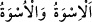
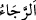

alıyordunuz.
27. Allah, onların yerlerine, yurtlarına, mallarına ve ayak basmadığınız
topraklara sizi mirasçı yaptı. Allâh’ın her şeye gücü yeter.
“Andolsun ki, Rasûlullah” ey mü’minler “sizin için Allâh’ı” Allâh’ın sevabını “ve
âhiret gününe” âhiret nîmetlerine “kavuşmayı umanlar” yahut Allah’tan ve âhiret
gününden korkanlar “ve Allâh’ı” bütün vakitlerinde ve hallerinde “çok zikredenler için
güzel bir örnektir.”
Celaleyn Tefsîri’nde geçtiği gibi bu âyette hitap mü’minleredir. “Allâh’a ve âhiret
gününe kavuşmayı umanlar…” ifâdesinden anlaşılan da budur.
Râğıb şöyle demiştir: “
”, güzel olsun çirkin olsun, bollukta olsun, darlıkta
olsun başkasına uyma konusunda insanın bulunduğu haldir.
Mânâ şöyledir: Andolsun ki Muhammed (s.a.)’de sizin için, harpte sebat etmek ve
zorluklara göğüs germek gibi örnek alıp uymayı hak eden güzel bir haslet ve iyi bir
sünnet vardır. Nitekim Uhud savaşında Hz. Peygamber (s.a.)’in kaşının üstü yarılmış,
rebaiye dişi kırılmış, amcası Hamza (r.a.) şehid edilmiş ve daha nice eziyet ve
sıkıntılara maruz bırakılmıştır. Bütün bu durumlarda O sebat edip metânet gösterdi,
yenilgi ve yılgınlık göstermedi. Sabretti, şikâyette bulunmadı. O halde siz de onun
sünnetine uyun, O’nun izinde yürüyün, O’na yardım edin ve O’ndan geri kalmayın.
Bazıları şöyle demiştir: Âyetteki “ ” harf-i cerri tecrîdiyyedir, yâni sanki Hz.
Peygamber (s.a.)’in o temiz nefsinden /zatından bir şey tecrid edilmiş ve ona “örnek”
denilmiştir. O da yine bizzat kendisidir. Yâni Rasûlullah (s.a.) kendisine uyulması ve
peşinden gidilmesi güzel olan bir örnek ve nümûnedir. “Miğferde yirmi men[188] demir
vardır.” sözü gibi. Yâni o miğfer bizatihi bu miktar demirden ibârettir, demektir.
“
(ummak)” ümid/emel yahut korku mânâsında olabilir. Burada ümid/recâ ile
itâatte devamlılığı gerektiren çok zikir bir arada zikredilmiştir. Zaten ancak itâatte dâim
olmakla Rasûlullah (s.a.)’i örnek almak gerçekleşir.
Hakîm Tirmizî şöyle demiştir: “Rasûlullah (s.a.)’i örnek almak, O’na uymak,
sünnetine tâbi olmak, sözde ve işte O’na muhâlefeti terk etmektir.”
Şeyh Sa‘dî der ki:
Bu denizde yiğit olandan başkası bir kulaç gidemedi,
Çobanın (rehberin) arkasından gitmeyen kayboldu.
Bazı kişiler bu yoldan geri dönmüşlerdir,
Birçoğu gittiler ve onlar başı dönmüş olanlardır.
Peygamber’e aykırı yol tercih eden kişi,
Hedefe aslâ ulaşamayacaktır.
Saflık yoluna ulaşmak imkânsızdır ey Sa‘dî,